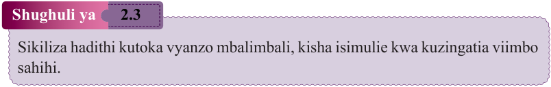

Sikiliza hadithi kutoka vyanzo mbalimbali, kisha isimulie kwa kuzingatia viimbo sahihi.
Soma kifungu cha habari kifuatacho, kisha weka alama sahihi ya kiimbo katika tungo zisizo na alama husika.
Mzee Kazinja na mke wake, Kaisho, wanaishi katika kijiji cha Msambiazi. Mzee Kazinja ni askari wa Jeshi la Wananchi na mke wake ni mfugaji. Kila siku ya